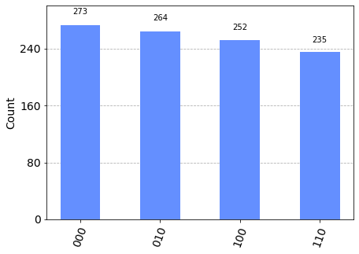

from qiskit import QuantumCircuit, Aer, transpile, assemble, execute
from qiskit.visualization import plot_histogram
import matplotlib.pyplot as plt
import numpy as npImport
# 큐비트의 개수
num_qubits = 3# 양자 회로 생성
qc = QuantumCircuit(num_qubits)QuantumCircuit?Init signature: QuantumCircuit( *regs: 'Register | int | Sequence[Bit]', name: 'str | None' = None, global_phase: 'ParameterValueType' = 0, metadata: 'dict | None' = None, ) Docstring: Create a new circuit. A circuit is a list of instructions bound to some registers. Args: regs (list(:class:`~.Register`) or list(``int``) or list(list(:class:`~.Bit`))): The registers to be included in the circuit. * If a list of :class:`~.Register` objects, represents the :class:`.QuantumRegister` and/or :class:`.ClassicalRegister` objects to include in the circuit. For example: * ``QuantumCircuit(QuantumRegister(4))`` * ``QuantumCircuit(QuantumRegister(4), ClassicalRegister(3))`` * ``QuantumCircuit(QuantumRegister(4, 'qr0'), QuantumRegister(2, 'qr1'))`` * If a list of ``int``, the amount of qubits and/or classical bits to include in the circuit. It can either be a single int for just the number of quantum bits, or 2 ints for the number of quantum bits and classical bits, respectively. For example: * ``QuantumCircuit(4) # A QuantumCircuit with 4 qubits`` * ``QuantumCircuit(4, 3) # A QuantumCircuit with 4 qubits and 3 classical bits`` * If a list of python lists containing :class:`.Bit` objects, a collection of :class:`.Bit` s to be added to the circuit. name (str): the name of the quantum circuit. If not set, an automatically generated string will be assigned. global_phase (float or ParameterExpression): The global phase of the circuit in radians. metadata (dict): Arbitrary key value metadata to associate with the circuit. This gets stored as free-form data in a dict in the :attr:`~qiskit.circuit.QuantumCircuit.metadata` attribute. It will not be directly used in the circuit. Raises: CircuitError: if the circuit name, if given, is not valid. Examples: Construct a simple Bell state circuit. .. plot:: :include-source: from qiskit import QuantumCircuit qc = QuantumCircuit(2, 2) qc.h(0) qc.cx(0, 1) qc.measure([0, 1], [0, 1]) qc.draw('mpl') Construct a 5-qubit GHZ circuit. .. code-block:: from qiskit import QuantumCircuit qc = QuantumCircuit(5) qc.h(0) qc.cx(0, range(1, 5)) qc.measure_all() Construct a 4-qubit Bernstein-Vazirani circuit using registers. .. plot:: :include-source: from qiskit import QuantumRegister, ClassicalRegister, QuantumCircuit qr = QuantumRegister(3, 'q') anc = QuantumRegister(1, 'ancilla') cr = ClassicalRegister(3, 'c') qc = QuantumCircuit(qr, anc, cr) qc.x(anc[0]) qc.h(anc[0]) qc.h(qr[0:3]) qc.cx(qr[0:3], anc[0]) qc.h(qr[0:3]) qc.barrier(qr) qc.measure(qr, cr) qc.draw('mpl') File: ~/anaconda3/envs/temp_csy/lib/python3.8/site-packages/qiskit/circuit/quantumcircuit.py Type: type Subclasses: BlueprintCircuit, Diagonal, Permutation, MCMT, GMS, GR, GRZ, AND, OR, XOR, ...
# 양자 퓨리에 변환 수행
for qubit in range(num_qubits):
for j in range(qubit):
qc.cp(2 * np.pi / float(2**(qubit-j)), j, qubit)
qc.h(qubit)# 결과를 얻기 위해 회로를 초기화
qc.barrier()<qiskit.circuit.instructionset.InstructionSet at 0x7faf9b46d4f0># 측정 수행
qc.measure_all()# 양자 회로 시뮬레이션
simulator = Aer.get_backend('aer_simulator')
tqc = transpile(qc, simulator)
qobj = assemble(tqc)
result = simulator.run(qobj).result()DeprecationWarning: Using a qobj for run() is deprecated as of qiskit-aer 0.9.0 and will be removed no sooner than 3 months from that release date. Transpiled circuits should now be passed directly using `backend.run(circuits, **run_options).
result = simulator.run(qobj).result()# 결과 출력
counts = result.get_counts(qc)counts{'100': 252, '110': 235, '010': 264, '000': 273}# 결과 시각화
plot_histogram(counts)